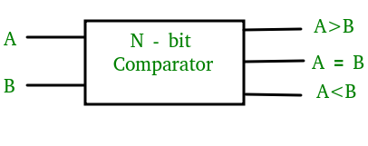
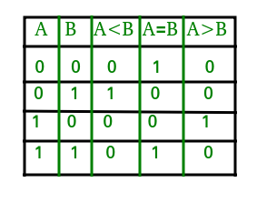
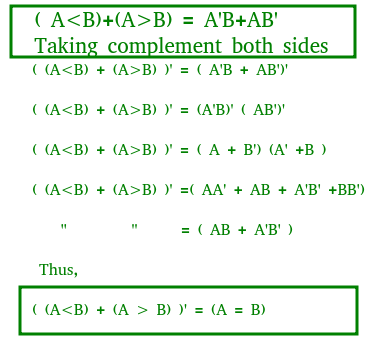
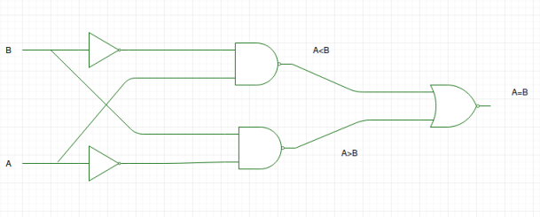
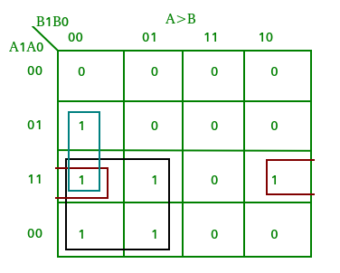
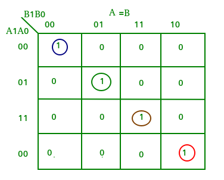
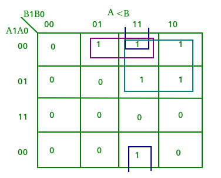
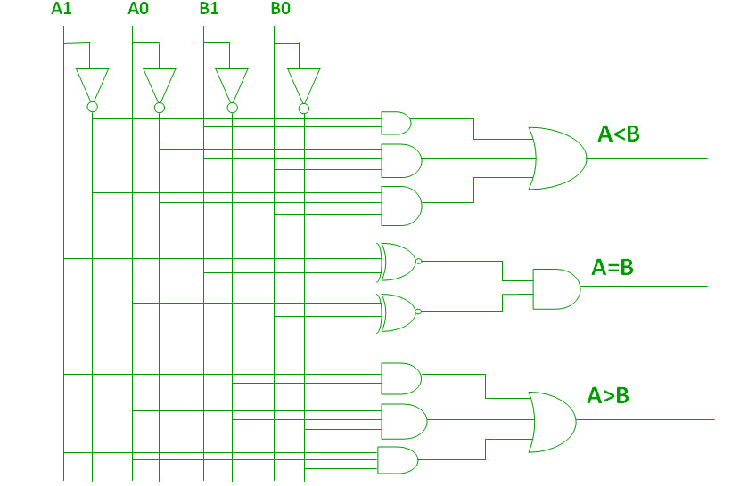
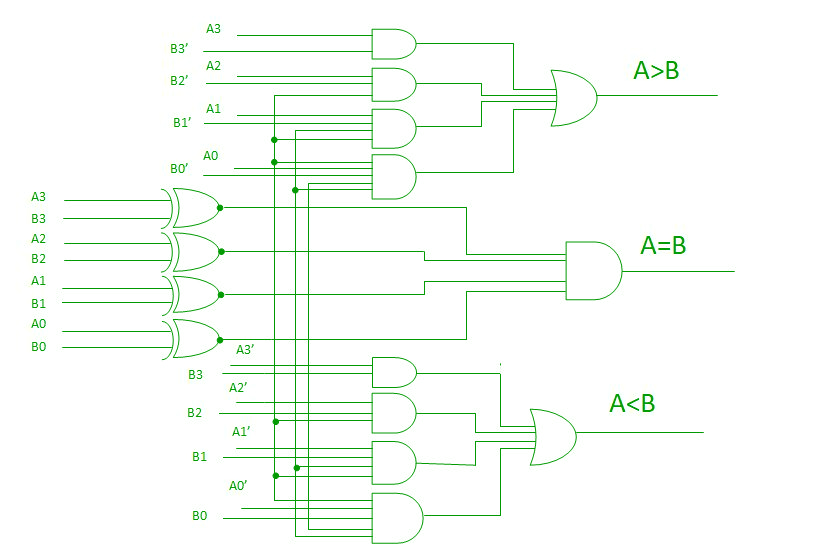
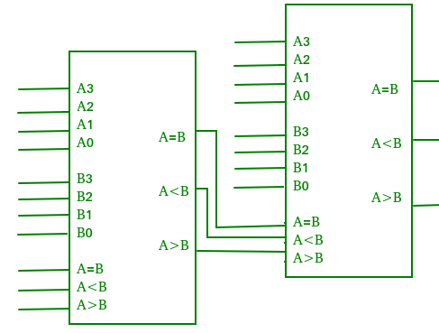

A magnitude digital Comparator is a combinational circuit that compares two digital or binary numbers in order to find out whether one binary number is equal, less than or greater than the other binary number. We logically design a circuit for which we will have two inputs one for A and other for B and have three output terminals, one for A > B condition, one for A = B condition and one for A < B condition.

1-Bit Magnitude Comparator –
A comparator used to compare two bits is called a single bit comparator. It consists of two inputs each for two single bit numbers and three outputs to generate less than, equal to and greater than between two binary numbers.
The truth table for a 1-bit comparator is given below:

From the above truth table logical expressions for each output can be expressed as follows:
A>B: AB' A<B: A'B A=B: A'B' + AB
From the above expressions we can derive the following formula:

By using these Boolean expressions, we can implement a logic circuit for this comparator as given below:

2-Bit Magnitude Comparator –
A comparator used to compare two binary numbers each of two bits is called a 2-bit Magnitude comparator. It consists of four inputs and three outputs to generate less than, equal to and greater than between two binary numbers.
The truth table for a 2-bit comparator is given below:

From the above truth table K-map for each output can be drawn as follows:



From the above K-maps logical expressions for each output can be expressed as follows:
A>B:A1B1’ + A0B1’B0’ + A1A0B0’ A=B: A1’A0’B1’B0’ + A1’A0B1’B0 + A1A0B1B0 + A1A0’B1B0’ : A1’B1’ (A0’B0’ + A0B0) + A1B1 (A0B0 + A0’B0’) : (A0B0 + A0’B0’) (A1B1 + A1’B1’) : (A0 Ex-Nor B0) (A1 Ex-Nor B1) A<B:A1’B1 + A0’B1B0 + A1’A0’B0
By using these Boolean expressions, we can implement a logic circuit for this comparator as given below:

4-Bit Magnitude Comparator –
A comparator used to compare two binary numbers each of four bits is called a 4-bit magnitude comparator. It consists of eight inputs each for two four bit numbers and three outputs to generate less than, equal to and greater than between two binary numbers.
In a 4-bit comparator the condition of A>B can be possible in the following four cases:
- If A3 = 1 and B3 = 0
- If A3 = B3 and A2 = 1 and B2 = 0
- If A3 = B3, A2 = B2 and A1 = 1 and B1 = 0
- If A3 = B3, A2 = B2, A1 = B1 and A0 = 1 and B0 = 0
Similarly the condition for A<B can be possible in the following four cases:
- If A3 = 0 and B3 = 1
- If A3 = B3 and A2 = 0 and B2 = 1
- If A3 = B3, A2 = B2 and A1 = 0 and B1 = 1
- If A3 = B3, A2 = B2, A1 = B1 and A0 = 0 and B0 = 1
The condition of A=B is possible only when all the individual bits of one number exactly coincide with corresponding bits of another number.
From the above statements logical expressions for each output can be expressed as follows:
AA, 831331 r: (A3 EioNor 33)A2132′ a (A3 Ex-Nor 133) (A2 Ex-Nor 132)A131′ a (A3 Ex-Nor 33) (A2 ENor132) (Al Ex-Nor 31)A01301
,13: A3’03 a (A3 Ex-Nor 33)A211:12 a (A3 Ex-Nor 83) (A2 Ex-Nor 132)Ar131 a (A3 Ex-Nor 33) (A2 Ex-Nor32) (Al Ex-Nor 131)A0N30
A=B: (A3 Ex-Nor B3) (A2 Ex-Nor 82) (Al Ex-Nor BI) (AO Ex-Nor BO)
By using these Boolean expressions, we can implement a logic circuit for this comparator as given below:

Cascading Comparator –
A comparator performing the comparison operation to more than four bits by cascading two or more 4-bit comparators is called cascading comparator. When two comparators are to be cascaded, the outputs of the lower-order comparator are connected to corresponding inputs of the higher-order comparator.

Applications of Comparators –
- Comparators are used in central processing units (CPUs) and microcontrollers (MCUs).
- These are used in control applications in which the binary numbers representing physical variables such as temperature, position, etc. are compared with a reference value.
- Comparators are also used as process controllers and for Servo motor control.
- Used in password verification and biometric applications.
References –
Digital comparator – Wikipedia
Comparator – epgp.inflibnet